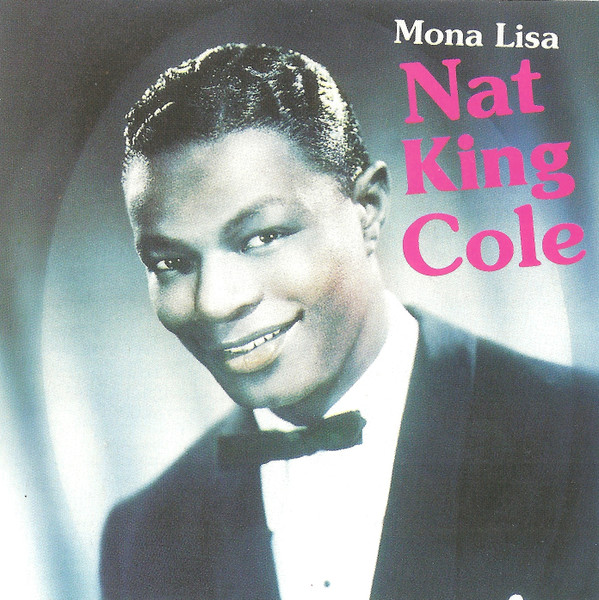
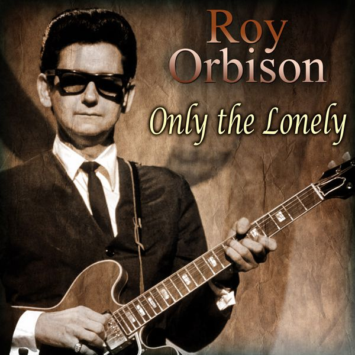
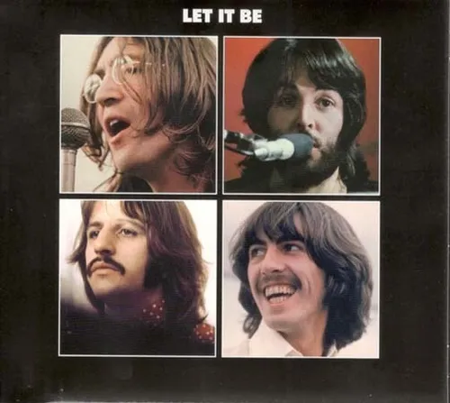
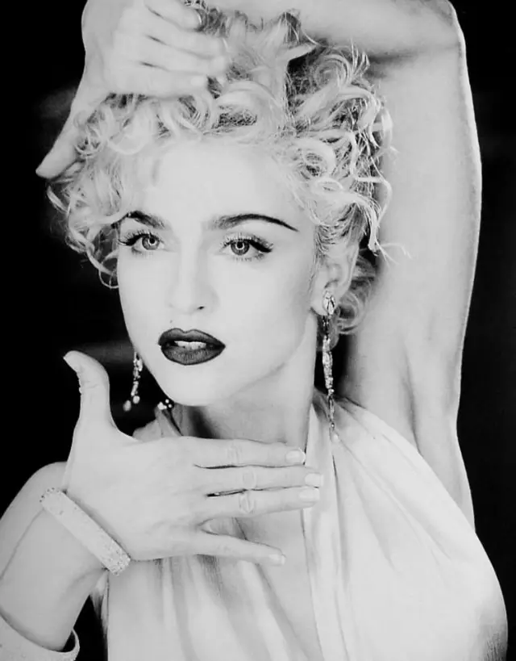
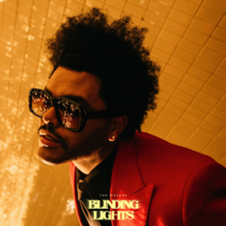

1930: Body and Soul.Interpretada por Libby Holman, esta valada de jazz se convirtiò en un estàndar muy influyente.

1940: I'll Never Smile Again. Interpretada por Tommy Dorsey and His Orchestra con la voz de Frank Sinatra y the Pied Pipers. Fue un gran èxito y marcò el despegue de la carrera de Sinatra.

1950: Mona Lisa. Interpretada por Nat King Cole. Esta cancion gano el Òscar de la mejor cancion original y fue uno de los mayores èxitos del año.

1960: Only The Lonely. Interpretado por Roy Orbison. Esta canciòn marcò el estilo dramàtico y melancòlico que harìa famoso a Orbison durante los años 60.

1970: Let It Be. Interpretado por The Beatles. Fue uno de los ùltimos grandes èxitos del grupo antes de su separaciòn. La canciòn se volviò un himno de esperanza y despedida.

1980: Call me. Interpretado por Blondie. Producida por Giorgio Moronder, esta canciòn encabezò las listas en EE.UU. y es uno de los temas màs representativos del new wave y el synth-pop temprano.

1990: Vogue. Interpretada por Madonna. Un himno del estilo y la auto expresiòn, y una de las canciones màs icònicas de su carrera, inspirada en la cultura del ballroom neoyorquino. 7

2000: Oops!... I Did It Again. Interpretda por Britney Spears. Uno de los mayores èxitos del pop adolecente, consolidò a Britney como ìcono del nuevo milenio.
_by_Ed_Sheeran.png)
2010: Shape of You. Interpretado por Ed Sheeran. Esta canciòn se convirtiò en un fenòmeno global, alcanzando más de 4.5 mil millones de reproducciones en Spotify.

2020: Blinding Lights. Interpretado por The Weekend. Lanzada en 2019, esta canciòn se convirtiò en un fenòmeno global en 2020, alcanzando màs de 1.6 mil millones de rerpoducciones en Spotify durante ese año.